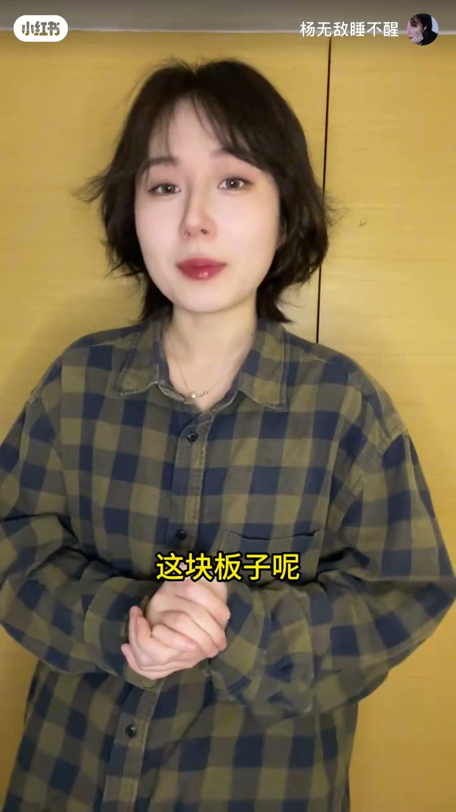
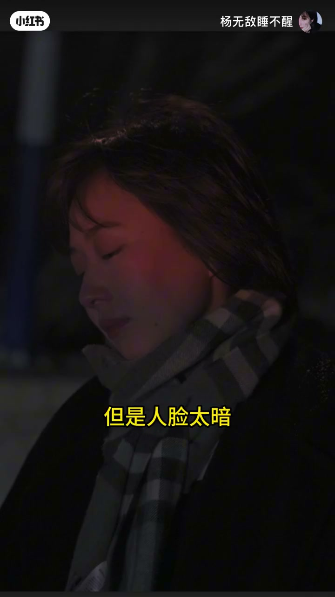
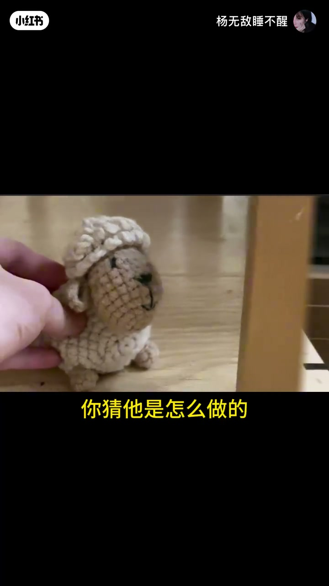
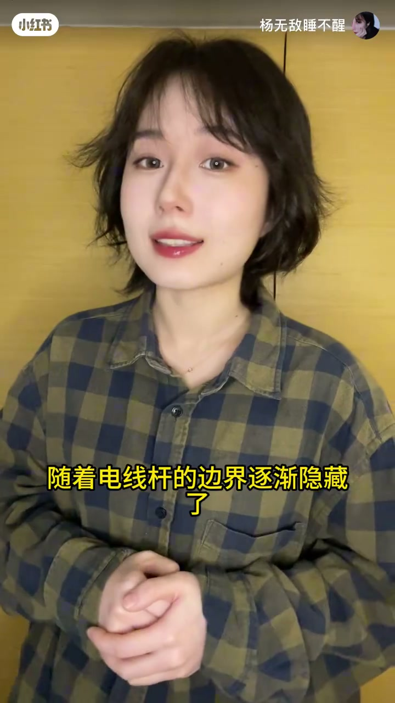
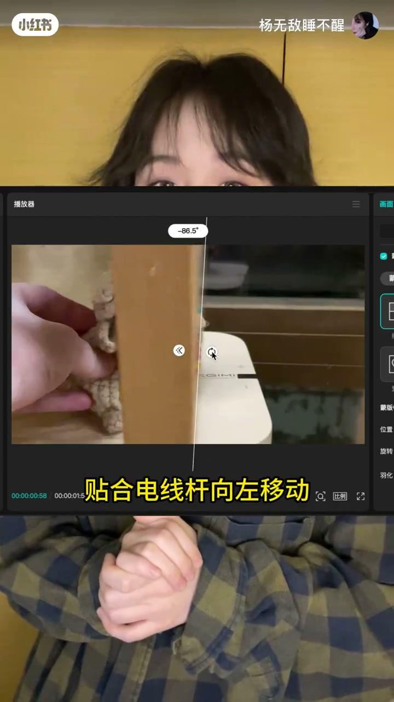

内容要点
一支 1 分 51 秒的对话式教学：两位主角以「蒙版到底是啥」开场，从一张照片讲起，把修图和剪辑里最重要的蒙版功能拆成五个递进的知识点——白加黑减原理、不破坏原图的换天操作、亮度涂层局部提亮、视频过渡里的隐藏蒙版，最后落到线性蒙版的实际应用。全程用画面演示，看完就能上手。
知识结构
「蒙版到底是啥」——这个功能在修图和剪辑中都特别重要，值得专门学一次。
用「不想要天空却擦多了」的例子对比：有蒙版就不用重来。蒙版相当于给照片叠一块板子，想显示哪儿涂白、想隐藏哪儿涂黑，口诀是「白加黑减」。
蒙版在蒙版上操作，不破坏照片本身，可随意修改。换天、改变画面形状都是这么做的。
蒙版不只用于照片：调色、文字、视频都可以。人脸太暗时，在亮度涂层上加蒙版，只把脸部涂白，亮度调整就只作用于脸部。
一段「两层视频」的过渡演示：A 段后半部分随电线杆边界逐渐隐藏，下一层的 B 段随之露出。
线性蒙版的效果是直线的一边显示、另一边隐藏。在 A 段视频上加上它，调整位置贴合电线杆向左移动，过渡就轻松实现。
蒙版的核心是「白加黑减」：在蒙版上用白色显示、黑色隐藏，从而在不破坏原图的前提下完成换天、局部调整、视频过渡等操作。从照片到视频，一个原理贯穿始终。
00:00-00:07蒙版到底是啥
视频用一段轻松的对话开场。一个声音带着困惑发问：「这个蒙版到底是啥呀？」另一个声音立刻接上：「这个很有用了，在修图和剪辑中都特别重要。」被问「难不难」，对方打包票：「不难，我教你。」

00:07-00:32从擦掉天空说起：白加黑减
教学从一张照片开始。主讲人指着照片：「如果我们不想要这个天空，把它擦掉了。」但难点出现了——「不小心擦多了，怎么办？」在没有蒙版的思路里，只能重来，下次仔细一点。
「但是有蒙版就不用这么麻烦了。」主讲人引出核心概念：蒙版相当于给照片上叠加一块板子，这块板子可以控制画面中哪里显示、哪里隐藏。规则很简单：「想显示哪儿，就在蒙版上涂上白色；想隐藏哪儿呢，就涂黑色。」一句话总结——「白加黑减」。


00:32-00:43不破坏照片本身的换天操作
听者总结自己的理解：「也就是在蒙版上操作，不破坏照片本身，可以随意修改。」主讲人肯定道：「对，那像换天、改变画面形状，都是这么做的。」蒙版的价值在这一刻体现出来：所有修改都在蒙版上完成，原图始终完好。

00:43-00:67从照片到调色：蒙版的局部调整
听者以为蒙版「不常用」，主讲人立刻纠正：「那如果蒙版不只能用在照片上，调色、文字、视频都可以呢。」
他用一张照片演示：背景正常，但人脸太暗。「直接调亮度呢，整个画面都变亮了。」这不是想要的效果。办法是：在亮度涂层上加上一个蒙版，把其他部分涂黑、只把脸部涂白——「那这个亮度调整，就只在脸部才有了。甚至想要哪儿亮都可以。」这被总结为蒙版的另一个用途：局部调整。


00:67-00:95视频过渡：一层一层分析
「咱们再稍微难一点点。」主讲人放出一段视频，让听者猜它是怎么做的。听者觉得「太难了」，跟蒙版有什么关系？
主讲人带着观众一层一层拆解：「你看这个画面，其实它只有两段视频，A 段是这样，B 段是这样。重点在 A 段的后半部分——随着电线杆的边界，逐渐隐藏了。」下一层的视频，就会随着露出来。


00:95-01:50线性蒙版：让过渡贴合画面
揭晓答案：「你看这有一个线性蒙版，它的效果是直线的一边显示、另一边隐藏。」那么只需要在 A 段视频上加上它，调整位置，让蒙版贴合电线杆向左移动——「就轻松实现了。」
「我觉得我行了。」听者信心满满地收尾。从一张照片到一段视频，蒙版的原理始终一致：白显示、黑隐藏，板子移动到哪里，哪里就发生变化。


完整转录（72段）
以下文本由 Whisper medium 模型自动转录，可能存在少量识别误差，已尽可能修正。
诶 这个蒙版到底是啥呀
这个很有用了
在修图和剪辑中都特别重要
那我想学 难不难
不难 我教你
你看啊 这是一张照片
如果我们不想要这个天空把它擦掉了
但是不小心擦多了 怎么办
那只能重来了 下次仔细一点
但是有蒙版就不用这么麻烦了
蒙版呢 就相当于给照片上叠加一块板子
这块板子呢
可以控制画面中哪里显示 哪里隐藏
想显示哪儿
就在蒙版上涂上白色
想隐藏哪儿呢 就涂黑色
简单计就是
白加黑减（保留）
哦 我懂了
也就是在蒙版上操作
不破坏照片本身
可以随意修改
对 那像换天（保留）
改变画面形状
都是这么做的
但是感觉不常用啊
那如果蒙版不只能用在照片上
调色 文字 视频
都可以呢
比如这张照片
背景正常 但是人脸太暗
直接调亮度呢
整个画面都变亮了
但如果我们在亮度涂层
加上一个蒙版
把其他部分涂黑
只把脸部涂白
那这个亮度调整
就只在脸部才有了
甚至想要哪儿亮都可以
聪明
这就是蒙版的另一个用途
局部调整
那咱们再稍微难一点点啊
你看这段视频
你猜它是怎么做的
这难太多了吧
跟蒙版有啥关系
动动你聪明的小脑瓜
咱们一层一层来分析啊
你看这个画面
其实它只有两段视频
A段是这样
B段是这样
重点在
A段的后半部分
随着电线杆的边界
逐渐隐藏了
哦 所以下一层的视频
会随着露出来
对啦
所以你看这有一个线性蒙版
它的效果是
直线的一边显示
另一边隐藏
那么我们是不是只需要在
A段视频上加上它
调整位置
让这个蒙版呢
贴合电线杆向左移动
就轻松实现了
我觉得我行了